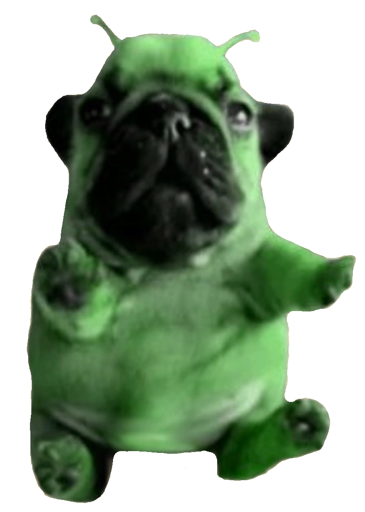
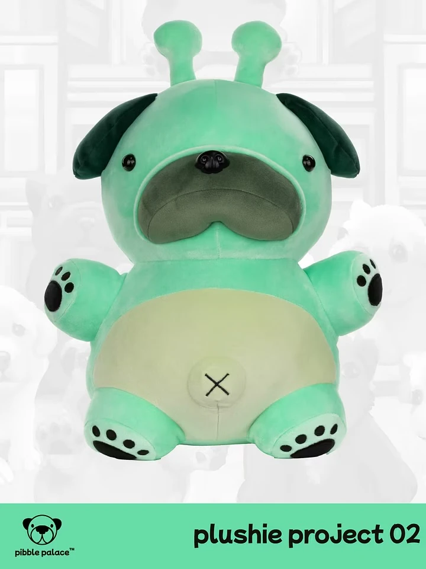
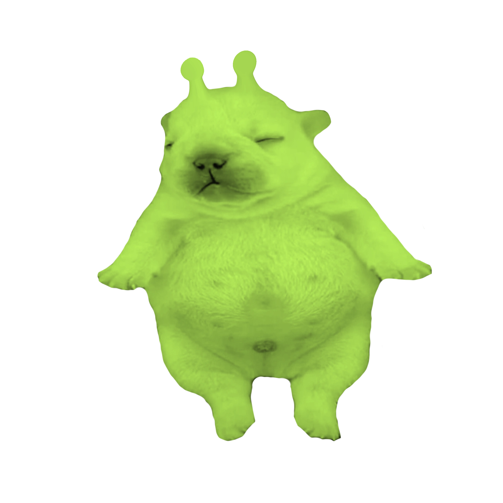

Pibble Variants & Related Species

For the central concept, see Pibble. For foods consumed by these species, see Food & Items.
The Pibble Verse is populated by a taxonomy of pibble variants — distinguished mainly by color, size, and lineage — and a parallel cast of non-pibble species who share the ecosystem. The wiki labels some of these (notably Pibble and Geeble) as canon; many others remain stubs and are formalized primarily through Reddit explanations and TikTok lore drops.[2][10][1]
Pibble variants
Base Pibble
Base pibbles are the "original" brown or tan baby French bulldogs fitting the archetypal small, rotund, silly look. In some fan explanations, when people say pibble without modifiers, they usually mean this brown variety. Base pibbles serve as the reference point when contrasting with Gmails, Washingtons, Bagels, and Pebbles.[1][2]
Gmail

Gmails are white pibbles, often with black spots, and are among the most recognizable variants in the fandom. Some descriptions distinguish between fully white Gmails and those with spots, but community consensus leans toward "white with black spots" as the current definition. TikTok content frequently showcases Gmail pibbles as peak pibble aesthetics, reinforcing their status as iconic within the verse.[8][9][1]
Washington

Washingtons are black pibbles, usually solid-colored rather than spotted. Reddit discussions describe Washington as "the black one" in the pibble family, parallel to Gmails representing white variants. The name has become a meme label for this colorway, similar to how "Gmail" was adopted for white pibbles.[1]
Bagel

Bagels are baby golden retrievers within the Pibble Verse taxonomy. Where pibbles are rooted in French bulldogs, Bagels represent a different dog lineage that still fits the small, goofy, affectionate aesthetic. Community posts describe Bagels as "baby golden pibbles," indicating that the pibble concept has expanded to absorb other dog types under the same meme umbrella.[14][1]
Pebble
Pebbles are older, larger, more mature versions of pibbles. While pibbles are baby-like, pebbles are what pibbles grow into once they are bigger but still retain the general round and silly nature. Some fans frame pebbles as evolved pibbles, others as a life-stage progression rather than a separate species. A contemporaneous Instagram reel introduces a character called Pebble Mug.[11][1]
Oreo / Yoshi

Oreos (also called Yoshis) are black-and-white patterned dogs within the pibble taxonomy. Oreos are distinct from Gmails: Gmails are primarily white with black spots, whereas Oreos / Yoshis are predominantly black with white spots. These names play on snack and brand imagery, continuing the meme-like naming pattern of Gmail and Bagel.[1]
Non-pibble species
Geeble

Geebles are canonically green, antennaed beings that
look similar to pibbles but are technically distinct. They are
described as baby Frenchies, or any small, rotund, looking silly
creatures, but unlike pibbles they are alien in origin and come from
the world Geeblorg.
Their green coloration, antennas, and alien backstory mark them as a
separate species.[10]
Geebles have weak powers, can fly, and often hover around skyscrapers asking for pibble treats. If refused, they simply fly away — but they also blast hostile entities like Chingles or Chis using laser guns. Trivia notes that their blood is acidic and that they possess very hard, resistant skin, which helps them survive their own violent encounters. They also like Pibberries, suggesting a broader ecosystem of Pibble Verse flora and foods.[13][10]




Beeble

The Beeble page in the Pibble Verse Wiki is referenced but not fully accessible. The available snippet indicates Beebles are similar to handheld pibbles that enjoy being held by humans. It is emphasized that Beebles never sting humans, owing to their strong bond with them — implying a bee-like or insectoid pibble-adjacent creature that acts benevolently toward people. Beyond this, details are sparse: Beebles are conceptually positioned as friendly familiars.[12]
Handheld Pibble

The wiki lists Handheld Pibble as a separate page, suggesting a sub-category of exceptionally small pibbles designed to be carried around by humans. They are referenced as the comparison point for the friendly Beeble.[12]
Chis

Chis appear as targets of geeble aggression and as the manufacturers (or namesakes) of the poisonous Chis Pibble Treats. Lore is sparse, but the wiki framing positions them as antagonistic to pibbles within the broader, chaotic ecosystem where multiple species fight, play, and trade snacks.[13][10]
Chingles

Chingles are hostile entities blasted by geebles using laser guns. They are paired with Chis in the geeble article as examples of creatures whose aggression triggers a geeble response. Beyond appearances in those contexts, accessible lore is minimal.[10]
Emails

Emails are listed alongside Chis and Chingles as entities that interact with geebles — often as targets for geeble aggression. Their wiki page is not currently accessible in detail, placing them in the same partially-defined tier as Beebles and Handheld Pibbles.[13][12][10]
References
- Reddit, r/AskReddit — What is the difference between all the pibbles…
- Pibble, Pibble Verse Wiki (Fandom).
- Pibble Verse Wiki front page (Fandom).
- TikTok — What's the Difference Between Gmail and Pibble.
- TikTok — #pibble #gmail, @pibblemaxx.
- Geeble, Pibble Verse Wiki (Fandom).
- Instagram reel — Pibble report takes over UNC Chapel Hill (introduces "Pebble Mug").
- Beeble, Pibble Verse Wiki (Fandom).
- Food and drinks, Pibble Verse Wiki (Fandom).
- Bagel, Pibble Verse Wiki (Fandom).
Full URLs are listed on the main article references.